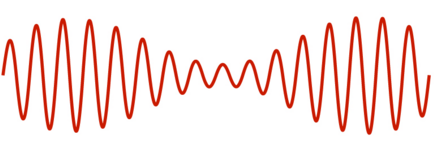
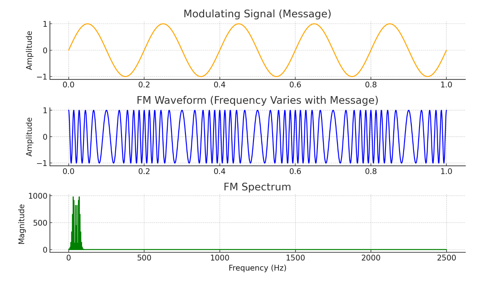
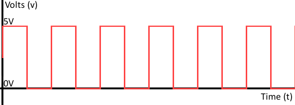
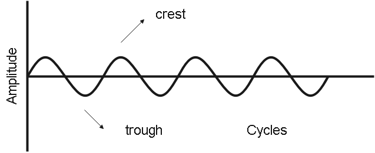

What You’re Looking At
When you view a waveform or spectrum, you are seeing how a signal behaves over time or across frequencies. Different systems create different shapes and patterns.
Common Signal Types

AM (Amplitude Modulation)
Signal height changes with audio. Looks like a smooth envelope.

FM (Frequency Modulation)
Frequency shifts instead of amplitude. Looks more constant in height.

Digital Signals
Often appear as blocky or structured patterns rather than smooth waves.

Noise
Random, messy patterns with no clear structure.
How to Identify Signals
- Look for structure vs randomness
- Check if amplitude changes or stays constant
- Look for repeating patterns
- Compare against known examples
Why This Matters
Being able to recognise signals visually helps you quickly identify what you're
dealing with — whether it's analogue voice, digital data, or just interference.
Quick Summary
Waveforms show how a signal behaves. Different modulation types create different
patterns. Learning to recognise these patterns is a key skill for understanding
radio systems.